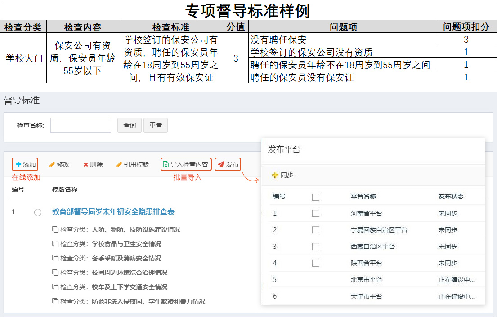
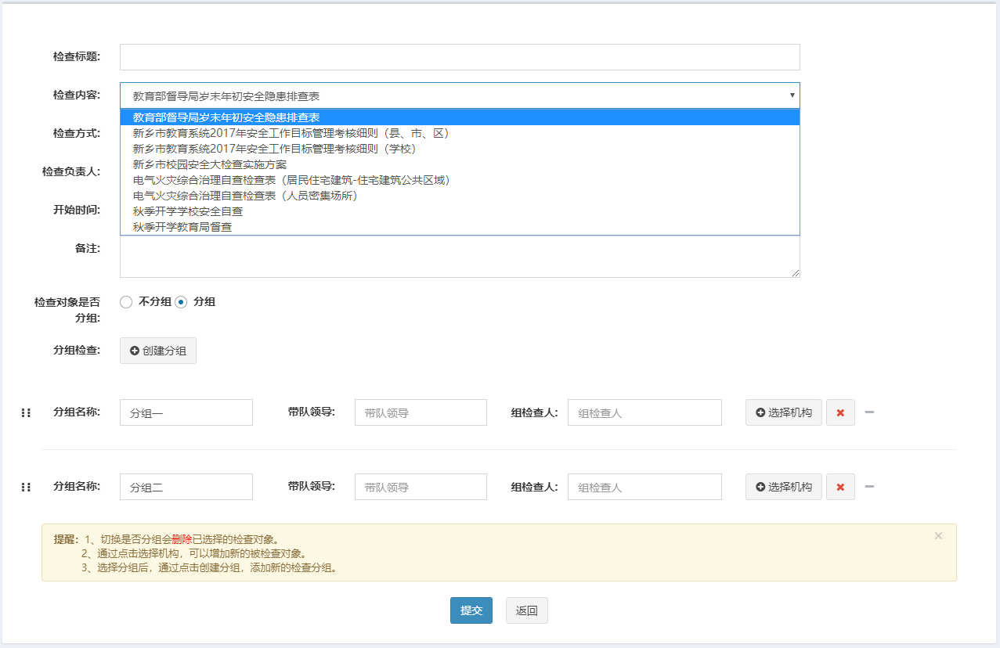
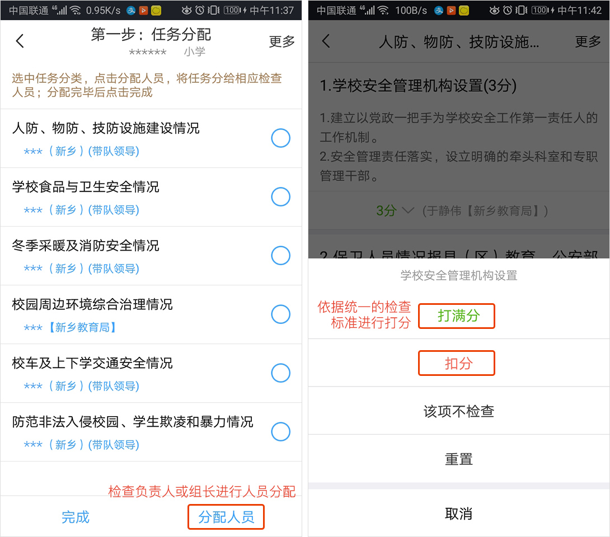
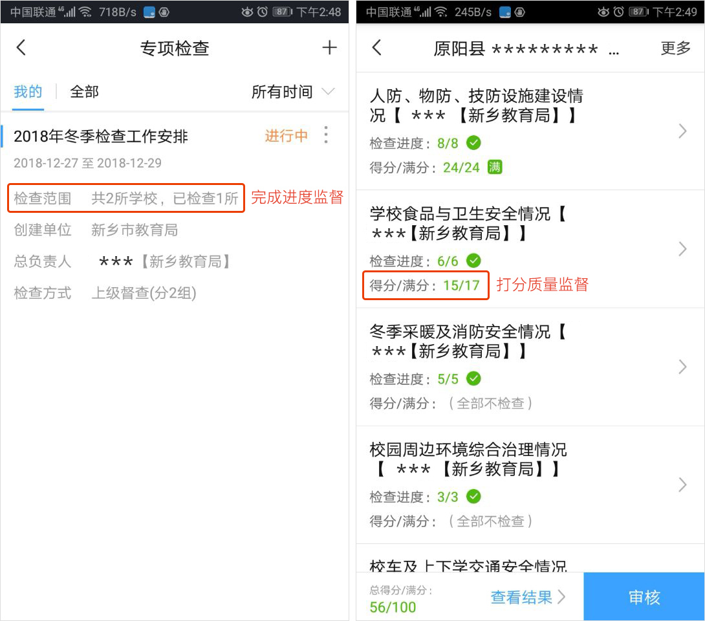
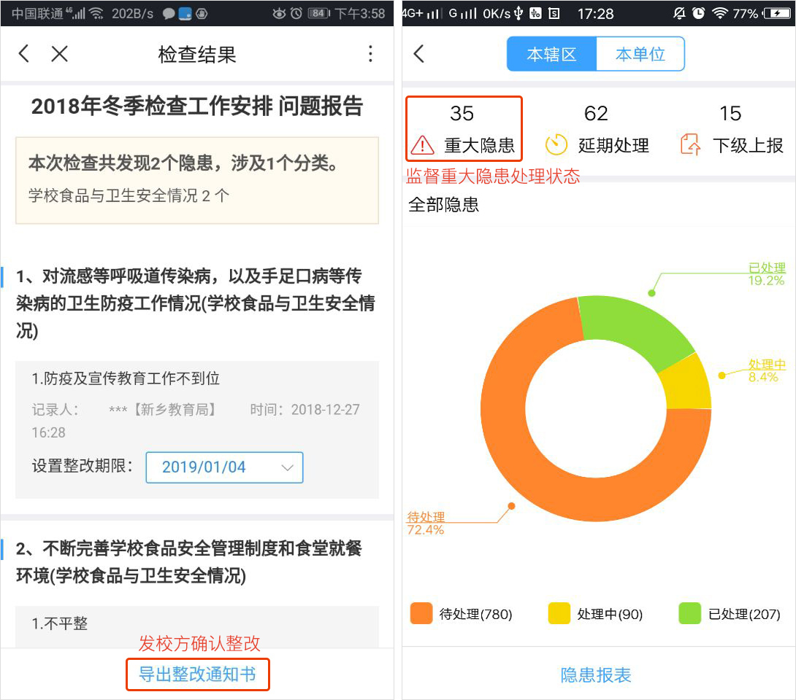

第7步：建设评估（按双重专家验收标准进行自查打分） 我已完成该步骤
-
/
平台端自动下发双重专家验收标准有二种添加方式，可以直接在线添加，也可采用批量导入方式。标准包括“检查分类”、“检查内容”、“检查标准”、“满分值”、“扣分项”和“扣分值”六项。
发布督导标准。选中要发布的标准、点击“发布”，可向已接入督导局平台的省级平台自动发布全国专项督导标准，各省级平台可直接引用开展学校自查、上级抽查工作。
 -
/
APP端安全负责人接收任务创建教育部实地督导任务。任务信息填写如右图所示，其中标查标准可选择已发布的专项督导标准；支持创建分组检查方式，通过点击“分组-创建分组”，可设置各小组带队领导、小组检查人和检查学校。
 -
/
APP端安全负责人按标准自查打分开始督导检查工作。登录专项督导APP，点击“专项督导”，被分配任务的人员可看到督导工作。首先检查负责人、组长进行学校检查工作人员分配； 被分配工作的检查人员登录APP可根据分配学校的检查项开始检查。
 -
/
APP端自动生成整改报告实时监督检查进度。登录专项督导APP，点击“专项督导”，可查看下发的专项督导任务检查范围及已检查完成学校数量，可对进度较慢的进行督促。
实时监督检查质量。检查负责人或组长可对已完成学校的检查打分情况进行审核，通过查看各检查内容对应扣分项进行复审，保证检查质量。
 -
/
按要求整改至90分以上APP导出学校整改通知。学校检查完成后，自动生成问题报告，检查人员可设置整改期限、导出学校整改通知书发校方确认，双打双签，一份留校方限期整改、一份局方存档备查。
APP监督检出隐患整治进度。点击“隐患治理”，可对检出的重大隐患整改进度重点跟踪、可查看详细处理人及处理状态。
PC端还可导出更多维度报告帮助提高治理效率。
